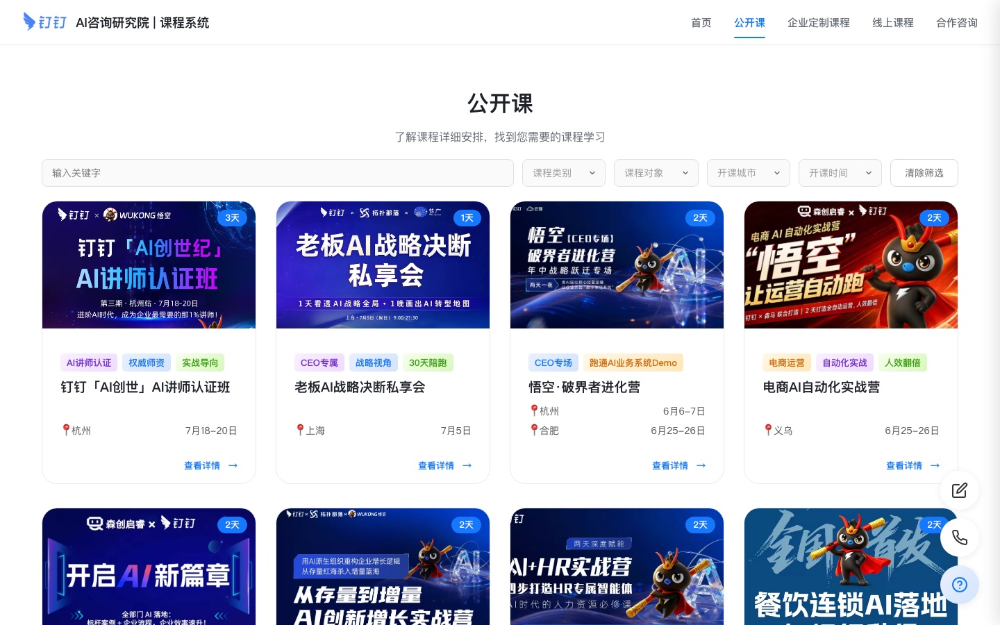
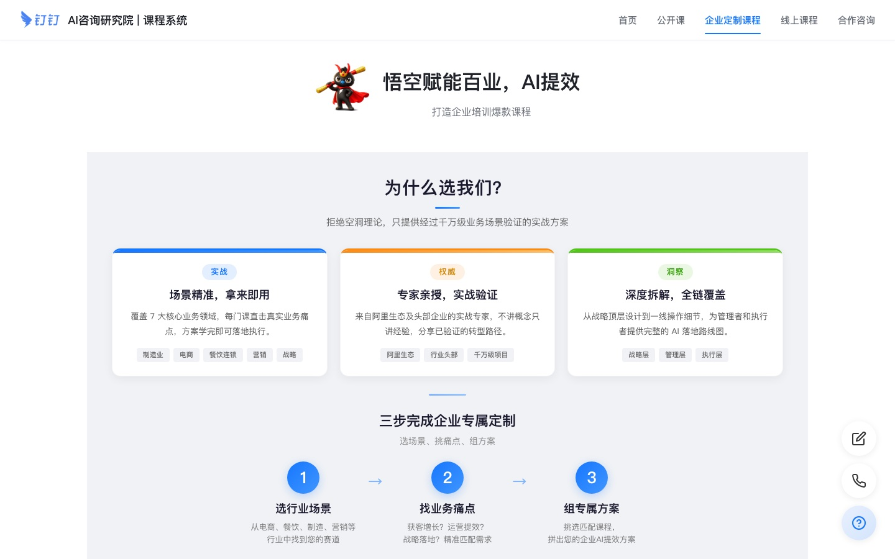
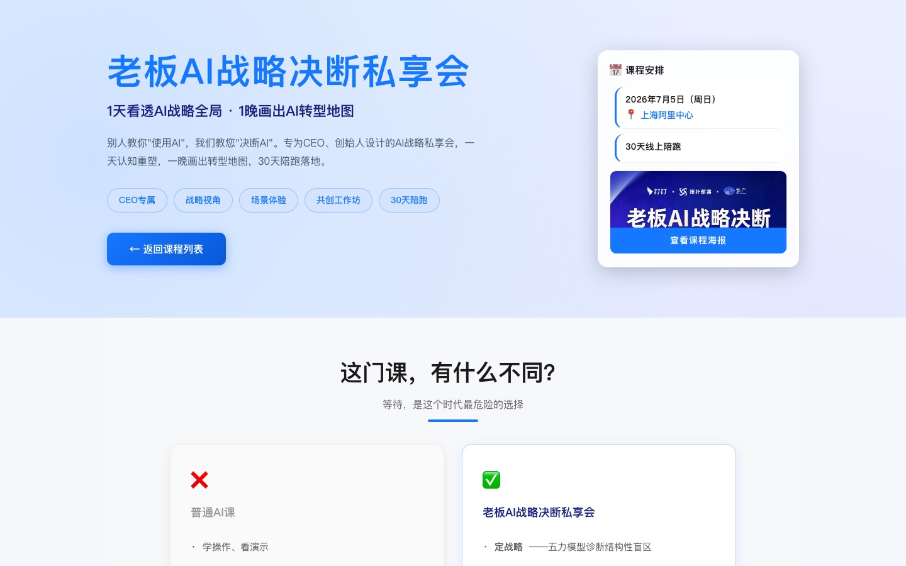
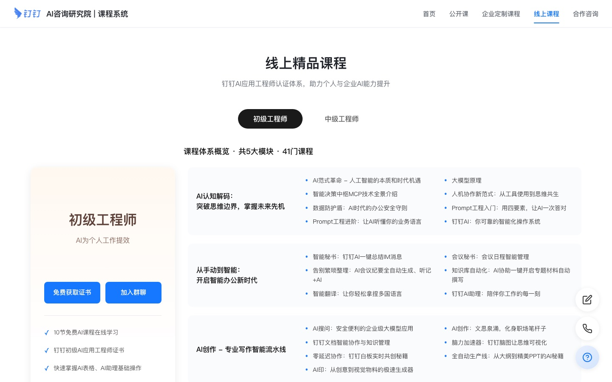

首页：轮播首屏 + 痛点问答 + 最佳实践案例
项目概述Overview
企业 AI 培训的招生页面有个共同的毛病：信息太多、层级太平。 课程名、对象、天数、城市、日期、价格、讲师背景、案例成果全堆在一起， 访客看三秒就走了。
我的做法是先分人，再分场景。整站拆成五个栏目： 公开课面向个人报名，企业定制课程面向决策者，线上课程面向自学， 首页负责建立信任，合作咨询负责转化。每类访客都能在第一屏找到属于自己的入口。
关键设计决策
- 统一设计规范层：把颜色、字号、卡片、按钮、间距抽到
common-styles.css，17 个页面共享一套视觉语言 - 课程卡片模板化：海报 + 天数角标 + 标签组 + 城市 + 日期 + 查看详情，信息位置固定，便于横向比较
- 筛选前置：公开课列表页顶部提供关键字、类别、对象、城市、时间五个筛选条件
- 对比式说服：详情页用“普通 AI 课 vs 本课程”的双栏对照，替代大段文案
- 案例即证据：首页直接陈列可量化的实践成果，而不是空泛的宣传语
页面一览Screens




实现要点Process
栏目切换用局部加载
首页通过 switchMainTab() 按需 fetch 对应的 tab-*.html 片段并注入容器，
切换栏目不整页刷新；同时支持 URL hash 直达（如 #enterprise），
外部链接可以精确指向某个栏目。
样式分层，避免复制粘贴
common-styles.css 承担全站通用规范，各页面只写自己的差异样式。
后期调整主色或卡片圆角，只需改一处。
课程数据结构化
把每门课抽象成同一组字段（海报、名称、天数、标签、城市、日期、对象）， 列表页和详情页共用这套结构，新增课程只是增加一条数据与一个详情页。
移动端适配
卡片网格用响应式列数，筛选条件在窄屏折行， 详情页的双栏对照在手机上自动堆叠为上下结构，保证可读性。